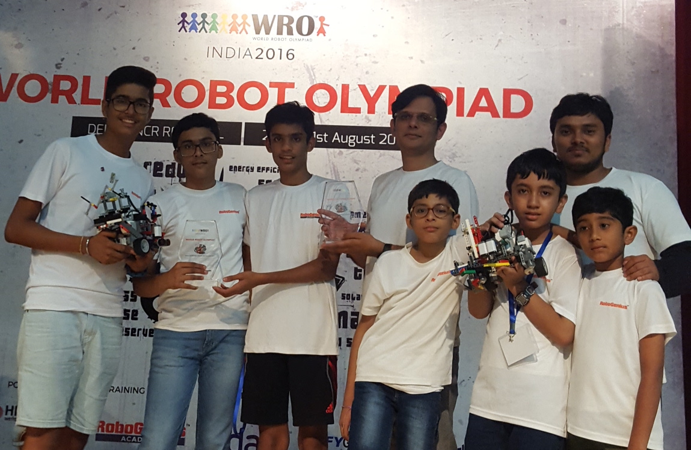
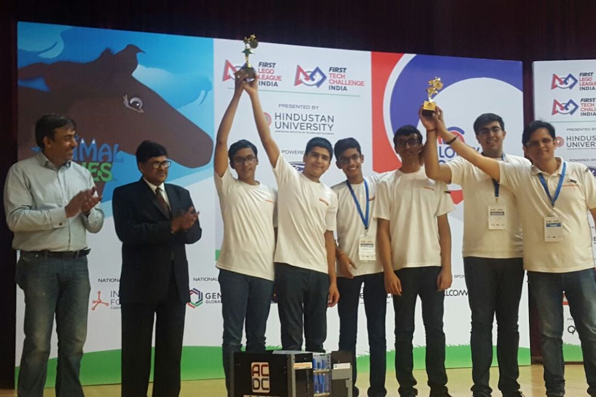

Welcome
PROFILE

Hello! I am Prakhar Mittal, I was born in a town called Saharanpur in India, on 26th May 2002; and as you
might guess- I am 14 years old. I attend Delhi Public School, in Gurgaon, where I am living since the past eight
years. Since a young age, I enjoyed tackling challenges and had a passion for pursuing my interests. I spend
quite a lot of time working on my computer: surfing the Internet, watching videos, following my favourite
topics, trying out new programming languages and making short films.
I am told I excel in studies, even when I am always busy in pursuing my hobbies. I have been learning to play the piano since I was seven, and as of now, am scheduled to appear for Trinity College London's Grade 7 Exam. In my free time, I listen to songs, and play them on my piano, or compose my own music using Logic Pro. Moreover, I love playing with my camera and learning fancy film-editing skills on Final Cut Pro. Web development is another one of my several interests.
I like to work in groups and am good at planning and organizing the group. I am good at problem identification and show quick logical understanding as well. These qualities, and my natural passion for programming, introduced me to the world of STEM Education.
I eventually became a part of Team HIGH VOLTAGE, which exposed me to the world of robotics. We participated in the World Robot Olympiad 2015, which helped me to learn communication and teamworking skills. In the First Lego League season, I was introduced to the mechanical aspect of building a robot, which was one sphere where I originally lacked. FLL helped me open up by providing me opportunities of interacting with people across the globe and express my opinions in front of others.
The highlight of my life was when my team High Voltage bounced back from a failed run to get a fullscore in the three elimination runs, to finish 2nd (Silver Medal) in the internationals event of WRO India 2016.
I am told I excel in studies, even when I am always busy in pursuing my hobbies. I have been learning to play the piano since I was seven, and as of now, am scheduled to appear for Trinity College London's Grade 7 Exam. In my free time, I listen to songs, and play them on my piano, or compose my own music using Logic Pro. Moreover, I love playing with my camera and learning fancy film-editing skills on Final Cut Pro. Web development is another one of my several interests.
I like to work in groups and am good at planning and organizing the group. I am good at problem identification and show quick logical understanding as well. These qualities, and my natural passion for programming, introduced me to the world of STEM Education.
I eventually became a part of Team HIGH VOLTAGE, which exposed me to the world of robotics. We participated in the World Robot Olympiad 2015, which helped me to learn communication and teamworking skills. In the First Lego League season, I was introduced to the mechanical aspect of building a robot, which was one sphere where I originally lacked. FLL helped me open up by providing me opportunities of interacting with people across the globe and express my opinions in front of others.
The highlight of my life was when my team High Voltage bounced back from a failed run to get a fullscore in the three elimination runs, to finish 2nd (Silver Medal) in the internationals event of WRO India 2016.
PROJECTS
World Robot Olympiad 2015:
Team: High Voltage
Members: Prutha Patil, Yoosha Urfi, Prakhar Mittal
The World Robot Olympiad is a global robotics competition for young people. First held in 2004 in Singapore, it now attracts more than 20,000 teams from nearly 60 countries. The competition consists of 4 categories: Regular, College, Open and Soccer. Regular and Open categories consist of three age groups: Elementary, Junior High and Senior High. It is based on the idea that students from all over the world should have the opportunity to meet with other students to develop creativity, design and problem solving skills through challenging and educational robot competitions and activities.
The 2015 Regular Junior High challenge 'Treasure Hunt' required a robot to autonomously navigate around an unknown region finding and collecting good artefacts while staying safe and away from the invalid artefacts. Our robot solved the coordinate system with its wonderful sense of coordinates and direction, and ended back in the start area earning full points.
Awards and Achievements
- Solved the challenge with a full score of 100 points
- Stood at 2nd position in the WRO Delhi-NCR Regionals
- Stood at 7th position in the WRO India Nationals
FIRST LEGO League 2015-16:
Team: High Voltage
Members: Vir Goyal, Saarthak Gupta, Aryan Sharma, Yoosha Urfi, Kabeer Malhotra, Prakhar Mittal
FIRST LEGO League is an international competition organized for middle school students. Each August, FIRST LEGO League introduces a scientific and real-world challenge for teams to focus and research on. The robotics part of the competition involves desigining and programming LEGO Mindstorms robots to complete tasks. The students work out solutions to the various problems they are given and then meet for tournaments to share their knowledge, compare ideas, and display their robots.
Trash Trek, the 2015-16 theme of the FIRST LEGO Challenge focused on improving the current way of trash management. The robot game involved some tasks such as cleaning up plastic bags, using methane from a landfill to power factories and transport and sort waste, among other tasks.
Our robot 'Bolt' (later 'Bolt 2.O') was simple and sleek yet swift and efficient. Our entire run was spaced out with maximum time utilization and minimum base time. Our project focused on improving trash collection and then making a high-quality fertilizer out of biodegradable waste and to use non-biodegradable waste as polymer fibres.

Awards and Achievements
- Best Robot Performance Award: Delhi-NCR Regionals
- Best Project Research Award: Delhi-NCR Regionals
- Champions Award - 2nd Position: Delhi-NCR Regionals
- Best Robot Design Award: FLL India
- Champions Award - 3rd Position: FLL India
- Recommended for Core Values: FLL Asia Pacific Invitational, Sydney

World Robot Olympiad 2016:
Team: High Voltage
Members: Jainil Ajmera, Abhimanyu Dev Singh, Prakhar Mittal
The World Robot Olympiad is a global robotics competition for young people. The 2016 season, Rap the Scrap, is to be held in Delhi, India in November 2016. The Indian chapter began from October, with the Delhi-NCR Regionals being the opening tournament of the season. This year saw an immense increase in the number of teams, trying to figure out a way of solving a much more complex challenge- Waste Sorting.
The 2016 Regular Junior High challenge 'Waste Sorting' requires a robot to autonomously identify and locate the different types of wastes (denoted by cubes of different sizes and colours) found inside the house, and take them to their respective bins, to sort the waste. The challenge requires locating the different bins available for sorting (also differentiated by colors, and location), identifying different wastes available, and matching the wastes to their respective bins using an algorithm. Finally, to score points, the robot needs to pick the wastes, deposit them in the bins, and return to the start area (the house).
 Awards and Achievements
Awards and Achievements
- Solved the challenge with a full score of 120 points
- Stood at 1st position in Delhi-NCR Regionals
- Stood at 2nd position in WRO India Nationals
- Stood at 2nd position in WRO 2016, winning a Silver medal for India
Media Coverage
- Article - High Voltage's victory at WRO2016
- YouTube Playlist - A collection of run, surprise rule and event videos
- Google Photos - A photo journey of Team High Voltage's season
- Times of India - "India hosts WRO, bags only one prize"
- Indian Express - "Indian team wins silver in WRO"
- Huffington Post - "Indian teenagers win internation prize for building a robot"

FIRST Tech Challenge 2016-17:
Team: AC/DC
Members: Prakhar Mittal, Jainil Ajmera, Yoosha Urfi, Akhilesh Sharma and Aryan Sharma
FIRST Tech Challenge is a global, robotics competition for students in grades 9-12. FTC Teams are responsible for planning, building and programming their robots in a 3-month build period to compete in an alliance format against other teams. Teams are also required to make an 'Engineering Notebook' that documents their build season and experience.
Velocity Vortex, the 2016-17 edition of the FIRST Tech Challenge, requires a robot to perform a variety of different tasks. The match begins with a 30 second autonomous period, where the robots can only operate by pre-programmed instructions. In this period, points are awarded if the robot presses the correct beacon buttons, successfully shoots 'particles' (balls) into designated areas and/or parks on a ramp or raised platform. The autonomous period is followed by a 2 minute driver-controlled period, where points are awarded if the robot shoots particles into the designated areas and/or lifts a 'cap ball' (gym ball).
Our robot features a holonomic drivetrain for increased maneuverability, a flicker for quickly and effectively launching the particles and a mechanism for pressing the correct beacon buttons.
Awards and Achievements
- Inspire Award Winner at FTC India
- Captain of Winning Alliance at FTC India
- Qualified to represent India at FTC World Championship, St Louis, MO, USA
MEDIA GALLERY


CONTACT ME


I make music and programming videos on my YouTube Channel. You can check those out!
I am pretty active on Hangouts so feel free to chat with me!